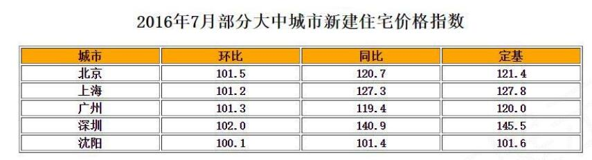

Pandas库
|
|
Pandas包括两种数据类型：Series, DataFrame。
Pandas基于NumPy实现，常与NumPy和Matplotlib一同使用。
与Numpy的比较：
| NumPy | Pandas |
|---|---|
| 基础数据类型 | 扩展数据类型 |
| 关注数据的结构表达 | 关注数据的应用表达 |
| 维度：数据间关系 | 数据与索引间关系 |
Series类型
索引
Series类型由一组数据及与之相关的数据索引组成：
|
|
0 9
1 8
2 6
3 7
dtype: int64
第一列即为自动索引，第二列为数据。
我们也可以自定义索引：
|
|
a 9
b 8
c 6
d 7
dtype: int64
创建
Series类型可以由如下类型创建：
- Python列表，index与列表元素个数一致
- 标量值，index表达Series类型的尺寸
- Python字典，键值对中的“键”是索引，index从字典中进行选择操作
- ndarray，索引和数据都可以通过ndarray类型创建
- 其他函数，range()函数等
Python列表
如上。
标量
|
|
a 25
b 25
dtype: int64
字典
|
|
a 25
b 30
dtype: int64
|
|
c NaN
b 30.0
a 25.0
dtype: float64
ndarray类型
|
|
0 0
1 1
2 2
3 3
4 4
dtype: int32
9 0
8 1
7 2
6 3
5 4
dtype: int32
其他函数
|
|
0 0
1 1
2 2
3 3
4 4
5 5
dtype: int32
9 0
8 1
7 2
6 3
5 4
dtype: int32
name属性
Series对象和索引都可以有一个名字，存储在属性.name中
|
|
a 25
b 30
c 6
d 12
e 1
dtype: int64
|
|
索引
a 25
b 30
c 6
d 12
e 1
Name: 一个Series对象, dtype: int64
基本操作
Series类型包括index和values两部分，Series类型的操作类似ndarray类型和Python字典类型
|
|
a 25
b 30
c 6
dtype: int64
通过.index获得索引，通过.values获得数据。索引的类型为Index，数据的类型即ndarray
|
|
Index(['a', 'b', 'c'], dtype='object')
<class 'pandas.indexes.base.Index'>
[25 30 6]
<class 'numpy.ndarray'>
操作类似ndarray类型
- 索引方法相同，采用[]
- NumPy中运算和操作可用于Series类型
- 可以通过自定义索引的列表进行切片
- 可以通过自动索引进行切片，如果存在自定义索引，则一同被切片
|
|
|
|
12
a 25
b 30
dtype: int64
a 25
d 12
dtype: int64
|
|
a 25
b 30
d 12
dtype: int64
c 6
e 1
dtype: int64
|
|
a 7.200490e+10
b 1.068647e+13
c 4.034288e+02
d 1.627548e+05
e 2.718282e+00
dtype: float64
操作类似Python字典类型
- 通过自定义索引访问
- 保留字in操作
- 使用.get()方法
|
|
|
|
a 25
d 12
dtype: int64
|
|
True
|
|
6
操作特性
对齐：Series类型在运算中会自动对齐不同索引的数据
|
|
a 28.0
b 35.0
c 7.0
d 14.0
e NaN
dtype: float64
a 75.0
b 150.0
c 6.0
d 24.0
e NaN
dtype: float64
立即生效：Series对象可以随时修改并即刻生效
|
|
|
|
a 100
b 30
c 6
d 12
e 100
dtype: int64
|
|
a 100
b 30
c -1
d -1
e 100
dtype: int64
DataFrame类型
DataFrame类型是由具有相同索引的一组列组成，每列值的类型可以不同。
DataFrame是一个表格型的数据类型，既有行索引、也有列索引，常用于表达二维数据，也可以表达多维数据。

创建
DataFrame类型可以由如下类型创建：
- 二维ndarray对象
- 字典
由以下类型构成的字典- 一维ndarray
- 列表
- 字典
- 元组
- Series
- Series类型
- 其他的DataFrame类型
二维ndarray对象
|
|
0 1 2 3 4
0 20 19 18 17 16
1 15 14 13 12 11
其中第一列的“0 1”为自动行索引，第一行“0 1 2 3 4”为自动列索引
字典
|
|
column_1 column_2 column_3
a 1.0 10 NaN
b 2.0 20 -2.0
c 3.0 30 -3.0
d NaN 40 -4.0
数据根据行列索引自动补齐：
|
|
column_1 column_3
a 1 NaN
b 2 -2.0
c 3 -3.0
|
|
column_1 column_2 column_3
a 1 10 -1
b 2 20 -2
c 3 30 -3
d 4 40 -4

|
|
同比 城市 定基 环比
r1 120.7 北京 121.4 101.5
r2 127.3 上海 127.8 101.2
r3 119.4 广州 120.0 101.3
r4 140.9 深圳 145.5 102.0
r5 101.4 沈阳 101.6 100.1
-------------
Index(['r1', 'r2', 'r3', 'r4', 'r5'], dtype='object')
-------------
Index(['同比', '城市', '定基', '环比'], dtype='object')
-------------
[[120.7 '北京' 121.4 101.5]
[127.3 '上海' 127.8 101.2]
[119.4 '广州' 120.0 101.3]
[140.9 '深圳' 145.5 102.0]
[101.4 '沈阳' 101.6 100.1]]
|
|
r1 120.7
r2 127.3
r3 119.4
r4 140.9
r5 101.4
Name: 同比, dtype: float64
-------------
127.3
-------------
140.9
|
|
同比 127.3
城市 上海
定基 127.8
环比 101.2
Name: r2, dtype: object
-------------
101.2
索引
索引类型
Series和DataFrame的索引是Index类型，Index对象是不可修改类型
|
|
Index(['同比', '城市', '定基', '环比'], dtype='object')
Index(['同比', '城市', '定基', '环比'], dtype='object')
索引元素修改
Index类型的常用方法：
| 方法 | 说明 |
|---|---|
| .append(idx) | 连接另一个Index对象，产生新的Index对象 |
| .diff(idx) | 计算差集，产生新的Index对象 |
| .intersection(idx) | 计算交集 |
| .union(idx) | 计算并集 |
| .delete(loc) | 删除loc位置处的元素 |
| .insert(loc,e) | 在loc位置增加一个元素e |
|
|
Index(['同比', '城市', 'newcol', '定基', '环比'], dtype='object')
|
|
Index(['r5', 'r4', 'r2', 'r1'], dtype='object')
索引顺序修改
.reindex()能够对Series和DataFrame索引进行重拍
|
|
同比 城市 定基 环比
r5 101.4 沈阳 101.6 100.1
r4 140.9 深圳 145.5 102.0
r3 119.4 广州 120.0 101.3
r2 127.3 上海 127.8 101.2
r1 120.7 北京 121.4 101.5
|
|
环比 城市 同比 定基
r5 100.1 沈阳 101.4 101.6
r4 102.0 深圳 140.9 145.5
r3 101.3 广州 119.4 120.0
r2 101.2 上海 127.3 127.8
r1 101.5 北京 120.7 121.4
.reindex()的参数：
| 参数 | 说明 |
|---|---|
| index, columns | 新的行列自定义索引 |
| fill_value | 重新索引中，用于填充缺失位置的值 |
| method | 填充方法, ffill当前值向前填充，bfill向后填充 |
| limit | 最大填充量 |
| copy | 默认True，生成新的对象，False时，新旧相等不复制 |
首先修改索引元素，再使用.reindex()应用修改后的索引
|
|
同比 城市 定基 环比 new
r5 101.4 沈阳 101.6 100.1 -1
r4 140.9 深圳 145.5 102.0 -1
r3 119.4 广州 120.0 101.3 -1
r2 127.3 上海 127.8 101.2 -1
r1 120.7 北京 121.4 101.5 -1
|
|
环比 城市 newcol 同比 定基
r5 100.1 沈阳 100 101.4 101.6
r4 102.0 深圳 100 140.9 145.5
r2 101.2 上海 100 127.3 127.8
r1 101.5 北京 100 120.7 121.4
删除索引
删除某一行或者列时，可以首先修改（即删除）索引元素，再使用.reindex()应用修改后的索引。
也可以直接使用.drop()删除行或列索引。
|
|
|
|
同比 城市 定基 环比
r2 127.3 上海 127.8 101.2
r4 140.9 深圳 145.5 102.0
r5 101.4 沈阳 101.6 100.1
|
|
城市 定基
r1 北京 121.4
r2 上海 127.8
r3 广州 120.0
r4 深圳 145.5
r5 沈阳 101.6
小结
Series = 索引 + 一维数据
DataFrame = 行列索引 + 二维数据